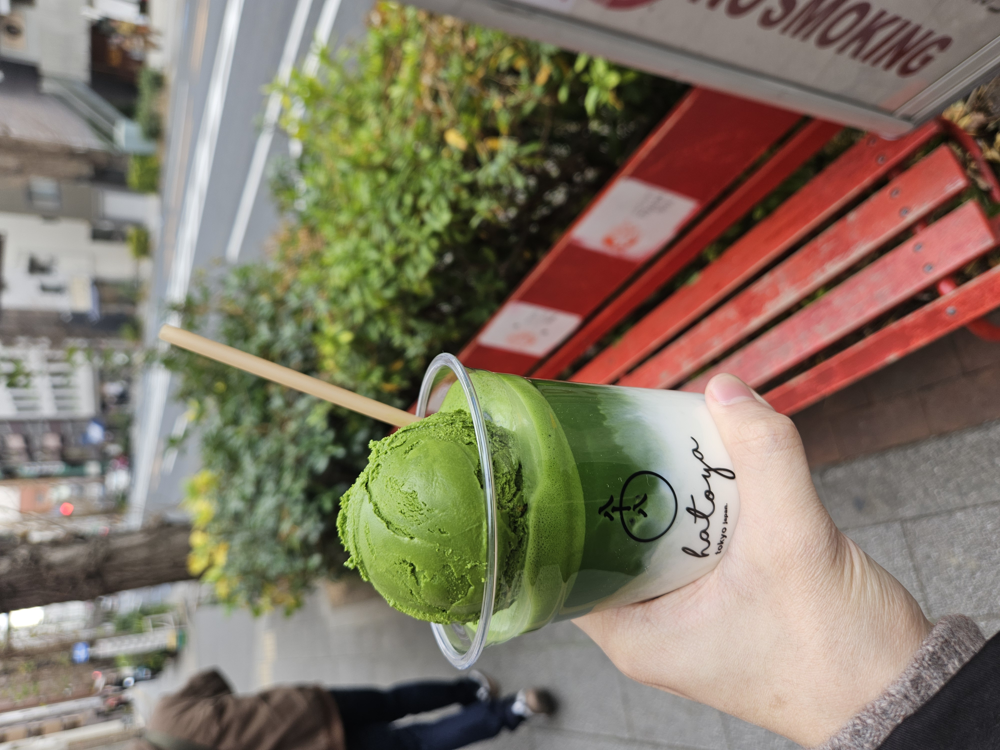

안녕하세요! Java와 C를 학습 중인 컴퓨터공학과 2학년입니다.
효율적인 백엔드 시스템을 만드는 개발자로 성장하고 싶습니다.

안녕하세요! Java와 C를 학습 중인 컴퓨터공학과 2학년입니다.
효율적인 백엔드 시스템을 만드는 개발자로 성장하고 싶습니다.
Languages: Java, C, Python (기초)
Concepts: 자료구조, 객체지향 프로그래밍(OOP)
Tools: Git, GitHub, Eclipse, VS Code
2025.03 - 현재 : 동국대학교WISE 컴퓨터공학과 2학년 재학
2025.02 - 광영고등학교 졸업